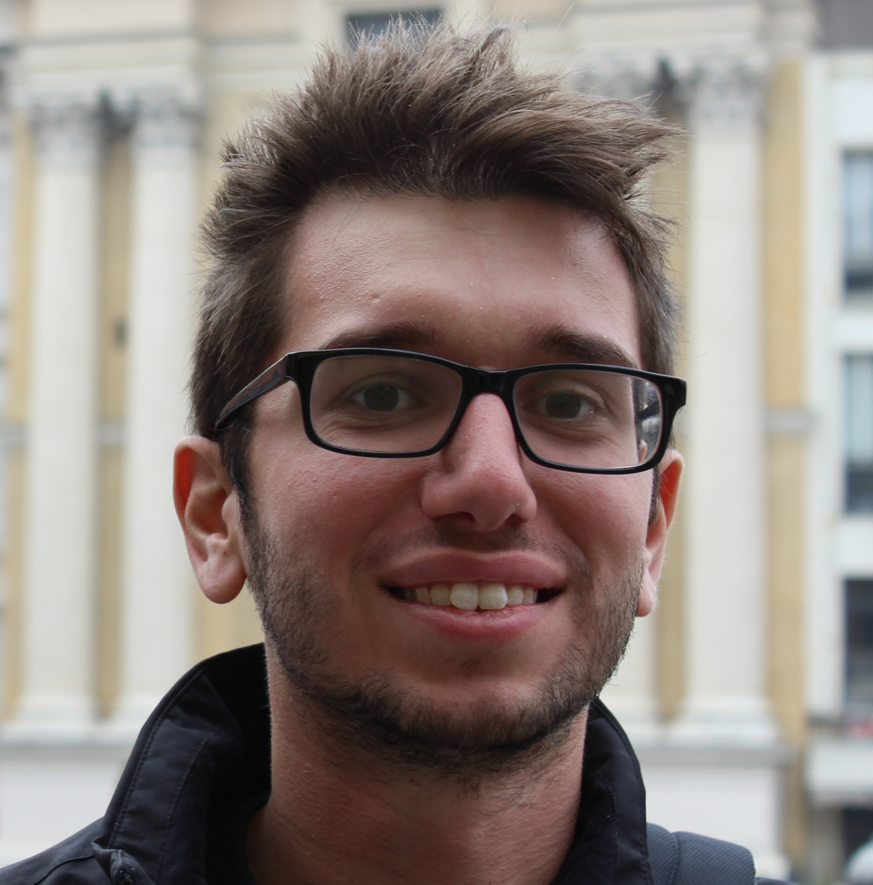

about
the course
This laboratory course explores signal processing and machine learning techniques to analyze data from wearable devices and cameras for develping healthcare applications. Students will learn how to preprocess physiological and video signals, extract meaningful features, and apply machine learning and deep learning models for tasks like activity recognition and vital sign monitoring. Hands-on group projects will focus on real-world health scenarios. The course will also features seminars from researchers and industry experts in this field.
faculty
Andrea Moglia
He received his Master’s degree in Mechanical Engineering at the University of Brescia (Italy) and the PhD in Microsystems Engineering at the University of Rome Tor Vergata (Italy). He participated in research projects on robot-assisted surgery, funded by the Department of Defense of the United States, and capsule endoscopy, supported by the South Korea government. He is working on artificial intelligence in medical imaging and surgery focused on multi-modal large language models.

Marco Paracchini
He obtained a Master’s degree in Mathematical Engineering in 2014 and a PhD in Information Technology in 2020 both from Politecnico di Milano. He worked on many topics related to signal processing, computer vision and machine learning including: SLAM, visual search, rPPG, tomography and eye tracking. He was part of two H2020 European projects and he collaborated with many companies such as STMicroelectronics, General Motors, Univision and Xnext. He is currently involved in a Politecnico and Luxottica joint project developing eye tracking and SLAM for smart eyewear.
Projects

Remote photoplethysmography
Wearable and camera based vital sign monitoring

Human pose tracking mixing IMU and cameras
Pose tracking fusing IMU and cameras

Remote temperature monitoring
Temperature monitoring with wearable and IR cameras